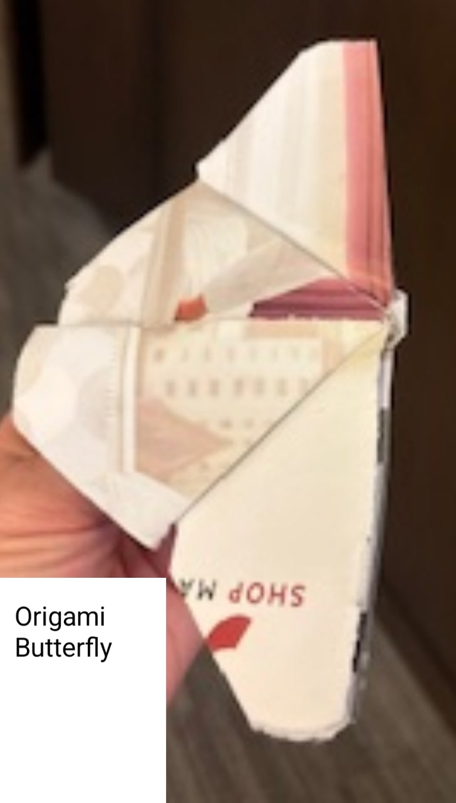

Project 6
Andy, Jonathan, Katarina (representing Seth), Renea
Phase 1 - Andy
Phase 2 - Jonathan
A Butterfly Made of Paper
A dream and a goal aren’t that different
Believing you can make it is the key
Unending pursuit of completion
Through every mountain and valley
To change for the better isn’t easy
Each moment can feel like the last
Reflecting on past situations
Forgiving yourself for the past
Let your self heal
You owe your self that
Move on with purpose
Avoid falling flat
Don’t lose the patience
Essential for growth
Or lose your focus
Forgetting your oath
Please just remember
Anyone can change
Please just remember
Everything will change
Remember